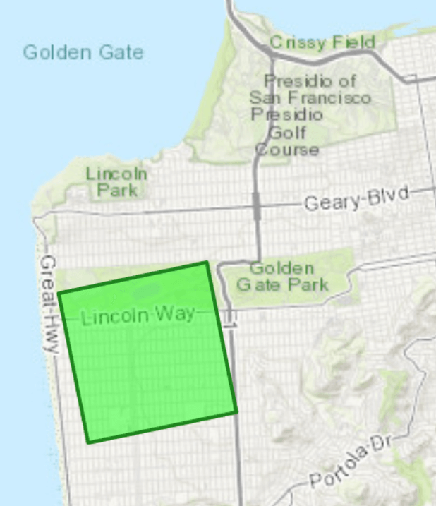

This page shows the hourly NWS forecast for the Central + Outer Sunset. The goal is to easily track a few parameters that lead to the marine layer forming or clearing.
I am trying to answer the question: "Is it going to be nice tomorrow / later in the Sunset?"
This is a work in progress. I'd love to hear your feedback at dandectis@gmail.com'

Sunset + Richmond Forecast
What is a Blue Hour?
(TEMP-DEW) > 5
AND
WIND < 10 mph
OR
TEMP > 65 mph
Days with hours like these, especially in the morning, seem likely to be sunny as opposed to foggy / overcast in the Sunset / Richmond